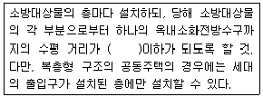
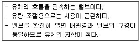
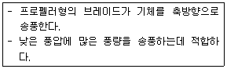
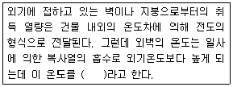
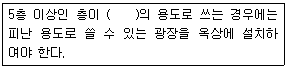
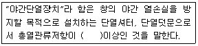

건축설비산업기사 (2011-10-02 기출문제)
1과목: 건축일반
1. 목조 계단의 구조에서 디딤판의 처짐, 보행 진동 등을 막기 위하여 계단의 경사에 따라 중앙에 걸쳐 대는 보강재로 옳은 것은?
- 난간두겁대
- 챌판
- 옆판
- 계단 멍에
(정답률: 78%)

2. 왕대공 지붕틀에서 평보와 왕대공의 보강 접합 철물은?
- 감잡이쇠
- 띠쇠
- 볼트
- 주걱볼트
(정답률: 78%)
3. 다음 중 리조트호텔(resort hoter)에 속하지 않는 것은?
- 산장호텔(moutain hotel)
- 온천호텔(hot spring hotel)
- 터미널호텔(terminal hotel)
- 해변호텔(beach hotel)
(정답률: 89%)
4. 사무소 건축의 화장실 배치에 관한 설명 중 옳지 않은 것은?
- 각 사무실에 동선이 간단할 것
- 각층마다 공통의 위치에 있을 것
- 가능하면 외기에 접하는 위치로 할 것
- 각층에서 3개소 이상 여러 곳에 분산 배치할 것
(정답률: 90%)
5. 주거건축의 단지계획에 있어서 교통계획에 대한 내용으로 옳지 않은 것은?
- 근린주구 단위 내부로의 자동차 통과진입을 극소화 한다.
- 안전을 위하여 고밀도 지역은 진입구와 되도록 멀리 배치시킨다.
- 2차도로 체계는 주도로와 연결되어 쿨드삭을 이루게 한다.
- 통행량이 많은 고속도로는 근린주구 단위를 분리시킨다.
(정답률: 81%)
6. 상점계획에 관한 설명 중 옳지 않은 것은?
- 종업원과 고객의 동선은 분리되지 않아야 한다.
- 종업원의 동선은 짧게, 고객의 동선은 길게 한다.
- 상점의 총면적이란 일반적으로 건축면적 가운데 영업을 목적으로 사용되는 면적을 말한다.
- 상품 이동 동선은 반입, 보관, 포장, 발송과 같은 작업 때문에 필요한 공간이다.
(정답률: 73%)
7. 철근콘크리트가 성립하는 이유로 옳지 않은 것은?
- 철근과 콘크리트의 온도팽창계수가 거의 같다.
- 콘크리트는 인장강도와 압축 강도가 모두 크다.
- 콘크리트는 철근이 녹스는 것을 방지한다.
- 철근과 콘크리트와의 부착강도가 매우 크다.
(정답률: 71%)
8. 호텔의 블록 플랜에서 파악되어야 할 대지조건과 가장 거리가 먼 것은?
- 소재지, 도시계획상의 용도 및 제한사정
- 전체 규모와 영업비율, 객실 수, 객실 면적
- 주차장 설치가능 면적 및 대수, 교통조건 및 교통량
- 상하수도, 가스, 전기 등의 도시 기반시설
(정답률: 60%)
9. 도서관계획에 대한 설명으로 옳지 않은 것은?
- 열람실은 채광이 좋고 조용하며 서고에서 멀리 떨어진 곳에 배치시킨다.
- 도서관의 신축 시에는 대지선정과 배치단계에서부터 장래의 성장에 따른 증축 가능한 공간을 확보할 필요가 있다.
- 서고의 수장능력 기준은 능률적인 작업용량으로서 서고공간 1m3당 약 66권 정도이다.
- 서고 내에 있는 서가는 정리, 수납에 중점을 두지만, 열람실의 서가는 도서의 선택 및 열람의 용이성에 중점을 둔다.
(정답률: 81%)
10. 목조지붕틀에 사용되는 부재들로만 구성된 것은?
- 가새, 종보, ㅅ자보
- 중도리, 꿸대, 왕대공
- 대공잡이, 토대, 선대
- 빗대공, 엄지기둥, 용마루
(정답률: 60%)
11. 간호사 대기소에 설치하여야 할 설비에 해당하지않는 것은?
- 카운터
- 주사기 등의 소독설비용 전열장치
- 간호사 호출벨 및 인터폰 설비
- 세탁물 설비
(정답률: 88%)
12. 벽돌벽 등에 장식적으로 구멍을 내어 쌓는 벽돌쌓기법은?
- 영롱쌓기
- 엇모쌓기
- 영식쌓기
- 세워쌓기
(정답률: 78%)
13. 철근콘크리트 구조의 주철근에 해당하는 것은?
- 벤트 근
- 스터럽
- 띠철근
- 나선 철근
(정답률: 40%)
14. 데크플레이트(deck plate)에 대한 설명으로 옳지 않은 것은?
- 무지주 공법이다.
- 철골조에 적합하다
- 거푸집 뿐만 아니라 구조재료로 사용된다.
- 주용도는 지붕재 또는 벽체 마감용이다
(정답률: 66%)
15. 동선계획에 대한 설명 중 옳지 않은 것은?
- 동선이 가지는 요소는 민도, 속도, 하중의 세 가지이다.
- 동선상의 하중이 큰 가사노동은 굵고 짧게 배치하는 것이 좋다.
- 복도가 없는 거실은 가족동선의 집중으로 안정된 분위기가 확보된다.
- 개인, 사회, 가사노동권의 3개 동선이 서로 분리되어 간섭이 없어야 한다.
(정답률: 79%)
16. 사무소건축의 코어에 대한 설명 중 옳지 않은 것은?
- 엘리베이터는 가급적 중앙에 집중되게 한다.
- 코어 내의 각 공간은 각층마다 공통의 위치에 있게 한다.
- 엘리베이터홀은 출입구문에 바싹 접근시킨다.
- 계단과 엘리베이터 및 화장실은 가능한 한 접근시킨다.
(정답률: 87%)
17. 공동주택의 단위주거 단면구성에 관한 설명 중 옳지 않은 것은?
- 플랫형(flat type)은 주거단위가 동일층에 한하여 구성되며 통로나 엘리베이터를 설치한다.
- 스킵형(skip floor type)은 주거단위의 단면을 단층형과 복층형에서 동일층으로 하지 않은 형식이다.
- 메조넷형(maisonette type)은 통로를 상층과 하층에 배치하므로, 유효면적이 감소한다.
- 트리플렉스형(triplex type)은 하나의 주거단위가 3층형으로 구성되어 프라이버시 확보율이 높다
(정답률: 65%)
18. 벽돌구조에서 벽의 두께를 결정하는 고려사항으로 가장 관계가 먼 것은?
- 벽의 길이
- 벽의 높이
- 벽돌 쌓기법
- 벽의 개구부 크기
(정답률: 48%)
19. 강구조에서 기둥과 보의 접합에 대한 설명으로 옳지 않은 것은?
- 휨모멘트가 적은 곳에서 접합한다.
- 보와 기둥의 접합 시 플랜지와 웨브는 기둥에 모두 모살용접으로 처리한다.
- 보를 기둥에 직접 용접하면 하향자세로 용접이 가능하여 용접속도가 좋다
- 접합된 기둥의 웨브에는 스티프너로 보강한다.
(정답률: 70%)
20. 학교의 배치계획 시 고려해야 할 사항으로 옳지 않은 것은?
- 동적공간은 가능한 진입로 근처에 배치한다.
- 교사와 운동장으로 분류하고 그 사이에 관리부분을 배치하는 것이 좋다.
- 학교행정 및 지원시설은 학생동선과 교차되는 범위내에서 중심부에 위치시킨다.
- 설비효율을 고려하면 건물을 가능한 상호연결, 군집시키는 것이 유리하다.
(정답률: 59%)
2과목: 위생설비
21. 15층 건물에서 옥내소화전의 설치개수가 가장 많은 층의 옥내소화전 설치개수가 7개일 때, 이 건물의 옥내소화전 설비 수원의 최소 저수량은?(오류 신고가 접수된 문제입니다. 반드시 정답과 해설을 확인하시기 바랍니다.)
- 2.6m3
- 13m3
- 18.2m3
- 36.4m3
(정답률: 61%)
22. 다음 중 위생기구에 연결되는 급수관의 접속관경으로 가장 부적합한 것은?
- 세면기 – 15mm
- 소변기(세정밸브) - 20mm
- 대변기(세정탱크) - 15mm
- 대변기(세정밸브) - 20mm
(정답률: 46%)
23. 단면적이 214cm2인 배관에 매분 4.5m3 의 물이 흐를 경우, 물의 속도를 계산하면 얼마인가?
- 0.014m/sec
- 0.00024m/sec
- 3.5m/sec
- 4.5m/sec
(정답률: 50%)
24. 고가수조방식을 채택한 건물에서 최상층에 샤워기가 설치되어 있을 경우 샤워기로부터 고가수조 저수위 면까지의 필요최저높이는? (단, 고각수조와 샤워기까지의 총 관내마찰손실수두는 5[mAq]이다.)
- 1.2m
- 12m
- 7.5m
- 15m
(정답률: 50%)
25. 급수배관에 관한 설명으로 옳지 않는 것은?
- 급수주관으로부터 분기하는 경우에는 T 이음쇠를 사용한다.
- 주배관에는 적당한 위치에 플랜지 이음을 하여 보수 점검을 용이하게 한다.
- 수평배관에서 어쩔 수 없이 공기 정체가 일어나는 곳에는 공기실(air chamber)을 설치한다.
- 음료용 급수관과 다른 용도의 배관이 크로스 커넥션(cross connection) 되지 않도록 배관한다.
(정답률: 64%)
26. 다음의 옥내소화전방수구의 설치에 관한 기준 내용 중 ( )안에 알맞은 것은?

- 15m
- 25m
- 30m
- 40m
(정답률: 52%)
27. 수질과 관련된 용어의 설명이 옳지 않은 것은?
- COD는 화학적 산소요구량을 말한다.
- ppm은 농도 단위로서 10만분의 1의 양을 말한다.
- SS는 부유물질로서 오수 중에 현탁되어 있는 물질을 말한다.
- BOD는 생물화학적 산소요구량으로 부패성 물질의 양이라고 생각할 수 있다.
(정답률: 59%)
28. 도시가스의 공급계통에서 압력 조정의 목적으로 설치하는 것은?
- 압축기
- 홀더
- 정압기
- 계량기
(정답률: 64%)
29. 건물의 급수량 결정과 관계가 없는 것은?
- 건물의 연면적
- 건물의 대지면적
- 설치된 위생기구수
- 건물의 급수 대상 인원수
(정답률: 73%)
30. 배수 설비에서 사용되는 트랩(Trap)과 용도의 연결이 옳지 않은 것은?
- S트랩 – 세면기 배수
- 벨트랩 – 대변기의 배수
- 드럼트랩 – 싱크류의 배수
- U트랩 – 옥내의 배수수평주관 말단
(정답률: 48%)
31. 다음 중 모든 기구의 트랩에 각개통기방식을 적용하기 가장 곤란한 이유는?
- 통기가 원활하지 못해서
- 배수관내의 유수가 원활하지 못해서
- 설비비용이 다른 방식에 비해 많아서
- 자기사이폰 작용의 방지에 효과가 없어서
(정답률: 66%)
32. 다음 중 화장실의 바닥면적을 가장 많이 차지하는 대변기 세정 방식은?
- 하이탱크 방식
- 로우탱크 방식
- 세정밸브 방식
- 기압탱크 방식
(정답률: 58%)
33. 강관 이음쇠 중 동일한 관경의 관을 직선 연결할때 사용되는 것은?
- 엘보(elbow)
- 부싱(bushing)
- 유니온(union)
- 플러그(plug)
(정답률: 57%)
34. 2개 이상인 기구 트랩의 봉수를 모두 보호하기 위하여 공통으로 설치하는 통기관은?
- 도피 통기관
- 신정 통기관
- 반송 통기관
- 루프 통기관
(정답률: 53%)
35. 수도직결식 급수방식에 대한 설명으로 옳지 않은 것은?
- 급수압력이 일정하다.
- 고층으로의 급수가 어렵다.
- 정전 등으로 인한 단수의 염려가 없다.
- 위생성 측면에서 가장 바람직한 방식이다.
(정답률: 67%)
36. 급탕배관에서 관의 신축을 고려한 조치 사항으로 옳지 않은 것은?
- 배관 중간에 신축이음을 설치한다.
- 배관의 굽힘부분에는 스위블 이음으로 접합한다.
- 건물의 벽관통부분의 배관에는 슬리브를 설치한다.
- 이종금속 배관재의 접속시에는 전식(電蝕)방지 이음쇠를 사용한다.
(정답률: 62%)
37. 다음 중 위생기구의 재질로 알맞지 않은 것은?
- 흡수성이 높을 것
- 내식성 및 내마모성이 우수할 것
- 각종 형상 및 크기로 제작하기가 쉬울 것
- 청결 유지를 위해 표면이 매끄럽고 아름다울 것
(정답률: 61%)
38. 다음 중 위생설비 유니트의 요구조건과 가장 거리가 먼 것은?
- 본관과의 배관 접속이 어려울 것
- 경량이고 운반에 편리한 형상일 것
- 현장에서 조립 및 설치가 간단할 것
- 대량 생산이 가능하고 제작공정이 단순할 것
(정답률: 69%)
39. 급탕설비의 부속기기 중 서머스탯(thermostat)의 가장 주된 용도는?
- 소음 제거
- 응축수 배출
- 이상압력 배출
- 온수온도 자동조절
(정답률: 74%)
40. 물의 경도에 대한 설명 중 옳지 않은 것은?
- 경도가 큰 물을 경수, 경도가 낮은 물을 연수라 한다.
- 경수는 연관이나 황동관을 부식시키며, 연수는 배관내에 스케일을 발생시킨다.
- 물의 경도는 물 속에 녹아있는 칼슘, 마그네슘 등의 염류의 양을 탄산칼슘의 농도로 환산하여 나타낸 것이다.
- 일반적으로 지표수는 연수, 지하수는 경수로 간주하지만, 물이 접하고 있는 지층의 종류에 따라 좌우된다.
(정답률: 66%)
3과목: 공기조화설비
41. 건구온도 30℃ , 엔탈피 63kJ/kg 인 습공기 3000m3/h를 바이패스팩터 0.2인 냉각코일로 냉각감습 하는 경우 냉각되는 전열량은? (단, 습공기의 밀도 = 1.2kg/m3 냉각코일의 표면온도 = 10℃ 10℃ 포화습공기의 엔탈피 = 29.4kJ/kg)
- 약 20.2 kW
- 약 26.9 KW
- 약 32.8 kW
- 약 38.4 kW
(정답률: 37%)
42. 증기난방에 사용되는 부속기기 중 플로트 트랩에 대한 설명으로 옳지 않은 것은?
- 증기해머에 의해 내부손상을 입을 수 있다.
- 구조상 동결의 우려가 있는 곳에는 적합하지 않다.
- 넓은 범위의 압력과 급격한 압력변화에도 원활히 작동한다.
- 다량의 응축수는 처리할 수 있으나 소량의 응축수는 처리할 수 없다.
(정답률: 60%)
43. 덕트의 뱡향전환을 위해 사용되는 장방형 단면의 원호형 엘보의 국부저항손실계수가 0.22일 때, 이 엘보에 발생하는 국부저항손실은? (단, 풍속은 10m/s이다.)(오류 신고가 접수된 문제입니다. 반드시 정답과 해설을 확인하시기 바랍니다.)
- 10.5 Pa
- 13.2 Pa
- 15.4 Pa
- 19.6 Pa
(정답률: 54%)
44. 다음과 같은 특징을 갖는 밸브는?

- 게이트 밸브
- 글로브 밸브
- 체크 밸브
- 앵글 밸브
(정답률: 58%)
45. 다음 설명에 알맞은 송풍기의 종류는?

- 후곡형
- 방사형
- 축류형
- 관류형
(정답률: 57%)
46. 온수난방식에 관한 설명으로 옳지 않은 것은?
- 중력순환식에서 방열기는 보일러보다 낮은 곳에 있어야 한다.
- 중력순환식은 온수의 밀도차에 의한 자연순환력을 이용하는 방식이다.
- 강제순환식은 온수순환이 확실하고 신속하며 배관의 관경도 가늘게 선택할 수 있다.
- 강제순환식은 볼류트 펌프 등의 기계적인 힘을 이용하여 장치내의 온수를 강제 순환시키는 방식이다.
(정답률: 58%)
47. 다음 설명 중 ( )안에 들어갈 말로 가장 알맞은 것은?

- 건구온도
- 일사온도
- 효과온도
- 상당외기온도
(정답률: 70%)
48. 공기조화방식 중 2중덕트방식에 관한 설명으로 옳지 않은 것은?
- 혼합상자에서 소음과 진동이 생긴다.
- 덕트가 2개의 계통이므로 설비비가 많이 든다.
- 냉ㆍ온풍의 혼합손실이 없으므로 에너지 절약적이다.
- 부하특성이 다른 다수의 실이나 존에도 적용할 수있다.
(정답률: 62%)
49. 수관보일러에 관한 설명으로 옳지 않은 것은?
- 지역난방 등에 사용된다.
- 사용압력이 연관식보다 낮다.
- 연관식보다 설치면적이 넓다.
- 부하변동에 대한 추종성이 높다.
(정답률: 59%)
50. 전열교환기에 관한 설명으로 옳지 않은 것은?
- 현열만이 교환된다.
- 공기 대 공기의 열교환기이다.
- 공조시스템에서 보일러나 냉동기의 용량을 줄일 수있다.
- 공장 등에서 환기에서의 에너지 회수방식으로 사용된다.
(정답률: 68%)
51. 펌프의 회전수가 1,200rpm일 때 토출량은 1.5m3/min, 양정은 48m, 소요동력이 12kW이었다. 토출량을 2m3/min로 높이기 위하여 필요한 회전수(N2)와 축동력(L2)은?
- N2 = 1,600 rpm, L2 = 21.3 KW
- N2 = 1,600 rpm, L2 = 28.4 KW
- N2 = 2,133 rpm, L2 = 21.3 KW
- N2 = 2,133 rpm, L2 = 28.4 KW
(정답률: 49%)
52. 실내 취득 현열량이 180000kJ/h, 잠열량이 38000kJ/h 일 때, 실내의 온도를 26℃로 유지하기 위해 실내에 공급하여야 할 풍량은? (단, 공기의 비열은 1.01kJ/kgㆍK, 공기의 밀도는 1.2kg/m3이고 실내에 공급되는 공기의 온도는 12℃다.)(오류 신고가 접수된 문제입니다. 반드시 정답과 해설을 확인하시기 바랍니다.)
- 약 9250 m3/h
- 약 10450 m3/h
- 약 12850 m3/h
- 약 14250 m3/h
(정답률: 27%)
53. 다음의 냉방부하 요소 중 잠열을 고려하지 않아도 되는 것은?
- 인체의 발생열량
- 일사에 의한 취득열량
- 틈새바람에 의한 취득열량
- 외기의 도입으로 인한 취득열량
(정답률: 62%)
54. 스크루식 냉동기에 관한 설명으로 옳지 않은 것은?
- 증기압축식 냉동기이다.
- 구조가 간단하여 고장이 적다.
- 왕복운동 부분이 없어서 소음 및 진동이 적다.
- 임펠러의 원심력에 의해 냉매가스를 압축하는 형식이다.
(정답률: 43%)
55. 실내를 항상 정압(+)상태로 유지할 수 있어서 오염된 공기의 침입을 방지하고, 연소용 공기가 필요한 경우 적합한 환기법은?
- 제1종 환기
- 제2종 환기
- 제3종 환기
- 제4종 환기
(정답률: 62%)
56. 습공기의 건구온도와 습구온도를 알 때 습공기 선도상에서 알 수 없는 것은?
- 엔탈피
- 상대습도
- 유효온도
- 절대습도
(정답률: 66%)
57. 덕트에 관한 설명으로 옳지 않은 것은?
- 원형덕트보다는 장방형덕트가 층고를 낮게 하는데 효과적이다.
- 덕트의 단면이 원형일 때 직관부 마찰저항은 덕트 직경에 비례한다.
- 동일한 풍량을 송풍할 때 덕트의 마찰손실은 단면이 원형인 원형덕트가 가장 적다.
- 장방형덕트에서 장변과 단면의 비를 아스펙트비라고 하며, 보통 4:1 이하가 바람직하다.
(정답률: 50%)
58. 실용적 5,000m3, 재실자 500명인 강당이 있다. 실내온도를 20℃로 하기 위한 필요한 환기량은?(단, 환기온도 15℃, 재실자 1인당의 발열량 81W, 실의 손실열량 4,070W, 공기의 밀도 1.2kg/m3, 공기의 정압비열 1.01kJ/kgㆍK 이다.)
- 18,875 m3/h
- 21,642 m3/h
- 25,624 m3/h
- 28,422 m3/h
(정답률: 34%)
59. 흡수식 냉동기의 응축기에서 냉각탑으로 흐르는 유체는?
- 열매
- 냉매
- 냉수
- 냉각수
(정답률: 72%)
60. 보일러 주변배관에 하트포트 접속법을 사용하는 가장 주된 목적은?
- 보일러의 일정수온유지
- 보일러의 일정압력유지
- 보일러의 안전수면유지
- 보일러의 압력초과방지
(정답률: 60%)
4과목: 건축설비관계법규
61. 방화구획의 설치기준 내용으로 옳지 않은 것은?
- 지하층은 층마다 구획할 것
- 3층 이상의 층은 층마다 구획할 것
- 11층 이상의 층은 바닥면적 300m2 이내마다 구획할 것
- 10층 이하의 층은 바닥면적 1,000m2 이내마다 구획할 것
(정답률: 58%)
62. 각 층의 거실면적이 1000m2 인 10층 업무시설에 16인승 승용승강기를 설치할 경우 최소 설치대수는?
- 1대
- 2대
- 3대
- 4대
(정답률: 49%)
63. 연면적 200m2를 초과하는 건축물에 설치하는 계단에 관한 기준 내용으로 옳지 않은 것은?
- 계단의 유효높이는 1.8m 이상으로 할 것
- 높이가 1m를 넘는 계단 및 계단참의 양옆에는 난간을 설치할 것
- 높이가 3m를 넘는 계단에는 높이 3m이내마다 너비 1.2m이상의 계단참을 설치할 것
- 초등학교의 계단인 경우, 계단 및 계단참의 너비는 150cm 이상, 단높이는 16cm 이하로 할 것
(정답률: 49%)
64. 건축물의 에너지절약설계기준상 중간기 또는 동계에 발생하는 냉방부하를 실내기준온도보다 낮은 도입 외기에 의하여 제거 또는 감소시키는 시스템으로 정의되는 것은?
- 지열시스템
- 태양광발전시스템
- 이코노마이저시스템
- 설비형태양열시스템
(정답률: 89%)
65. 다음의 소방시설 중 경보설비에 해당하지 않는 것은?
- 누전경보기
- 누전차단기
- 자동화재탐지설비
- 자동화재속보설비
(정답률: 72%)
66. 다음의 옥상광장 등의 설치에 관한 기준 내용 중( )안에 들어갈 수 없는 건축물의 용도는?

- 종교시설
- 의료시설
- 장례식장
- 판매시설
(정답률: 62%)
67. 다음은 건축물의 에너지절약설계기준에 사용되는 야간 단열장치의 용어 정의이다. ( ) 안에 알맞은 내용은?

- 0.1 m2ㆍK/W
- 0.2 m2ㆍK/W
- 0.3 m2ㆍK/W
- 0.4 m2ㆍK/W
(정답률: 76%)
68. 하수도법상 건물⋅시설 등에서 발생하는 하수를 공공하수도에 유입시키기 위하여 설치하는 배수관과 그 밖의 배수시설로 정의 되는 것은?
- 배수설비
- 하수관거
- 개인하수도
- 공공하수처리시설
(정답률: 38%)
69. 비상경보설비를 설치하여야 하는 특정소방대상물 기준으로 옳지 않은 것은?(단, 위험물 저장 및 처리시설 중 가스시설 또는 지하구는 제외)
- 지하가 중 터널로서 길이가 500m 이상인 것
- 40인 이상의 근로자가 작업하는 옥내작업장
- 지하층의 바닥면적이 150m2(공연장인 경우 100m2) 이상인 것
- 연면적이 400m2 이상인 것(지하가 중 터널 또는 사람이 거주하지 않거나 벽이 없는 축사 제외)
(정답률: 48%)
70. 연면적이 200제곱미터를 초과하는 공동주택에 설치하는 복도의 유효너비는 최소 얼마 이상이어야 하는 가? (단, 양옆에 거실이 있는 복도의 경우)
- 1.2m
- 1.8m
- 2.4m
- 3.0m
(정답률: 62%)
71. 복합건축물로서 공동방화관리자를 선임하여야 하는 특정 소방대상물의 연면적 기준은?
- 400m2 이상
- 1,000m2 이상
- 3,000m2 이상
- 5,000m2 이상
(정답률: 46%)
72. 다음 중 층수와 관계없이 방염성능기준 이상의 실내 장식물 등을 설치하여야 하는 특정소방대상물에 해당하지 않는 것은?
- 기숙사
- 종합병원
- 근린생활시설 중 안마시술소
- 근린생활시설 중 체력단련장
(정답률: 50%)
73. 건축물에 설치하는 경계벽 및 칸막이벽을 내화구조로 하고, 지붕밑 또는 바로 윗층의 바닥판까지 닿게하여야 하는 대상에 속하지 않는 것은?
- 숙박시설의 객실 간 칸막이벽
- 공동주택 중 아파트의 각 실간 칸막이벽
- 교육연구기설 중 학교의 교실 간 칸막이벽
- 단독주택 중 다가구주택의 각 가구간 경계벽
(정답률: 54%)
74. 건축허가시 미리 소방본부장 또는 소방서장의 동의를 받아야 하는 대상에 속하지 않는 것은?
- 관망탑
- 항공기격납고
- 연면적 400m2의 상점
- 연면적 100m2인 수련시설
(정답률: 46%)
75. 건축물의 출입구에 설치하는 회전문에 관한 기준 내용으로 옳지 않은 것은?
- 계단이나 에스컬레이터로부터 2m 이상의 거리를 둘 것
- 출입에 지장이 없도록 일정한 방향으로 회전하는 구조로 할 것
- 회전문의 회전속도는 분당회전수가 10회를 넘지 아니하도록 할 것
- 회전문의 중심축에서 회전문과 문틀 사이의 간격을 포함한 회전문날개 끝부분까지의 길이는 140cm 이상이 되도록 할 것
(정답률: 57%)
76. 건축물의 내부에 설치하는 피난계단의 구조에 관한 기준내용으로 옳지 않은 것은?
- 계단실 및 반자의 실내에 접하는 부분의 마감은 난연재료로 할 것
- 계단은 내화구조로 하고 피난층 또는 지상까지 직접 연결되도록 할 것
- 건축물의 내부에서 계단실로 통하는 출입구의 유효너비는 0.9m 이상으로 할 것
- 계단실은 창문ㆍ출입구 기타 개구부를 제외한 당해 건축물의 다른 부분과 내화구조의 벽으로 구획할 것
(정답률: 71%)
77. 다음의 무창층에 관한 기준 내용 중 밑줄 친 요건에 해당하지 않는 것은?
- 내부 또는 외부에서 파괴 또는 개방할 수 없을 것
- 개구부는 도로 또는 차량이 진입할 수 있는 빈터를 향할 것
- 개구부의 크기가 지름 50cm 이상의 원이 내접할 수 있을 것
- 해당 층의 바닥면으로부터 개구부 밑부분까지의 높이가 1.2m 이내일 것
(정답률: 75%)
78. 건축물을 건축하거나 대수선하는 경우 국토해양부령으로 정하는 구조기준 등에 따라 그 구조의 안전을 확인하여야 하는 대상 건축물에 속하지 않는 것은?
- 층수가 3층인 건축물
- 높이가 12m인 건축물
- 처마높이가 10m인 건축물
- 기둥과 기둥 사이의 거리가 10m인 건축물
(정답률: 45%)
79. 공동주택의 거실에 설치하는 반자의 높이는 최소얼마 이상이어야 하는가?
- 1.8m
- 2.1m
- 2.4m
- 4.0m
(정답률: 59%)
80. 건축물에 설치하는 헬리포트에 관한 기준 내용으로 옳지 않은 것은?
- 헬리포트의 주위한계선은 백색으로 할 것
- 헬리포트의 주위한계선의 너비는 38cm로 할 것
- 헬리포트의 길이와 너비는 각각 20m 이상으로 할 것
- 헬리포트의 중심으로부터 반경 12m 이내에는 헬리콥터의 이⋅착륙에 장애가 되는 건축물⋅공작물 또는 난간 등을 설치하지 아니할 것
(정답률: 68%)